1949
First Trophy
LE MANS 1949
The first post-war 24 Hours of Le Mans fell to the Ferrari 166 MM of Biondetti — page one of the Prancing Horse's endurance legend.
LE MANS HYPERCAR · 2023 — 2026
The prototype that came back to win
Fifty years after the 250 LM, Ferrari returned to the top class of endurance racing. The 499P answered with three consecutive 24 Hours of Le Mans victories and both 2025 world titles — writing the Prancing Horse back into the chronicle of the FIA WEC.
A wait spanning half a century ended at 4 p.m. on 11 June 2023.
Ferrari prototypes have always carried the letter P — for Prototipo — preceded by the engine's per-cylinder displacement: 2,992 cc divided by six cylinders equals roughly 499. On 29 October 2022, at the Finali Mondiali in Imola, Ferrari unveiled the 499P: a four-wheel-drive hybrid prototype built for the top Le Mans Hypercar (LMH) class of the FIA WEC, operated by the works team together with AF Corse.
It was the marque's first factory assault on overall endurance honours since the 312 P of 1973 — half a century later. The project drew on the full depth of Ferrari's endurance legacy: more than twenty world titles since 1953, and nine overall wins at Le Mans before 1965.
LE MANS 1949
The first post-war 24 Hours of Le Mans fell to the Ferrari 166 MM of Biondetti — page one of the Prancing Horse's endurance legend.
THE DYNASTY YEARS
From 1960 to 1965 Ferrari monopolised Le Mans; the 250 LM's 1965 triumph closed the first golden era.
312 P · ERA END
The 312 P closed the era of works prototypes. For fifty years Ferrari raced — and won — in GT, while the top step of the podium waited.
THE RETURN
The 499P won Le Mans on its first attempt. Fifty-eight years of waiting ended; a new dynasty began.
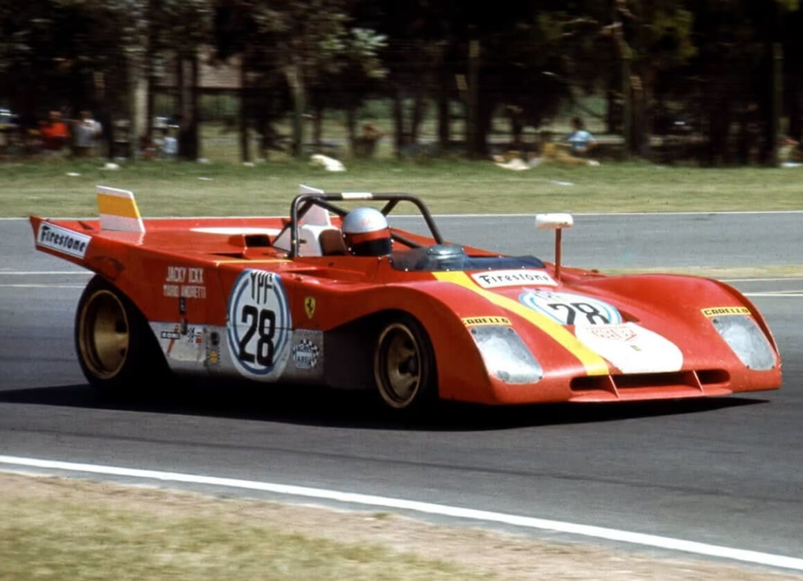
From 1949 to 1965 Ferrari collected nine overall wins at Le Mans; the era defined by the 166 MM, 250 Testa Rossa and 250 LM established endurance racing as the Prancing Horse's home ground. Every line of the 499P continues that lineage.
"The 499 P sees us return to compete for outright victory in the WEC series. We enter this challenge with humility, but conscious of a history that has taken us to over 20 world endurance titles and 9 overall victories at the 24 Hours of Le Mans."
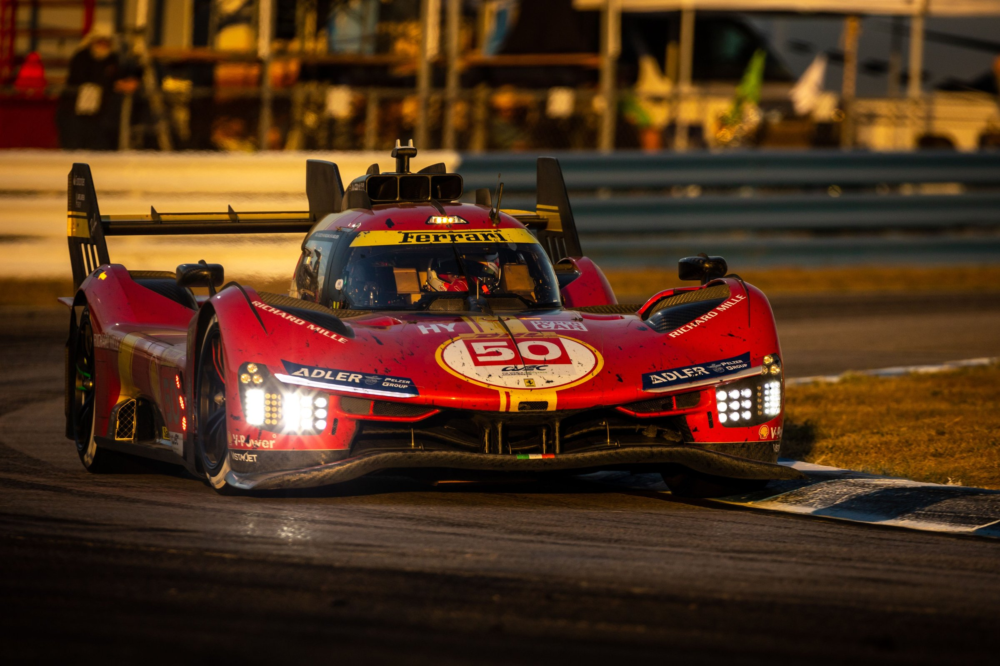
17 March 2023, the 1000 Miles of Sebring. Antonio Fuoco put the number 50 499P ahead of both defending-champion Toyotas in qualifying; in the race he held off the chasing Cadillac to finish third — a podium in the first top-class race in fifty years.
Tense lines and flowing surfaces in balance — every stroke has an aerodynamic reason.
The 499P's design was refined by the Ferrari Styling Centre under Flavio Manzoni, in lockstep with the sports-racing engineering department. Simple, sinuous shapes carry its full technical and aerodynamic content — an explicit expression of Ferrari's DNA.
A subtle carbon-fibre skin wraps the functions, leaving wheels and suspension completely exposed; the tail is defined by a horizontal double wing, with a light bar embedded in the lower plane. Scroll on, and let the car unfold.
Not one opening is decorative: intakes, cooling and airflow management dictate every surface.
Main plane and upper flaps are tailored for downforce; the light bar in the lower wing is the car's night-time signature.
The carbon skin covers only what it must; wheels and suspension stay fully exposed — the honest aesthetic of a prototype.
Behind the upward-opening door lies a cockpit of near single-seater layout — the driver is its only centre.
The 50 on the nose honours the last works prototype of fifty years before — a number as monument.
Head-on, the car reads as a mechanical sculpture on a plinth — the Prancing Horse prototype in its wet-floor reflection.
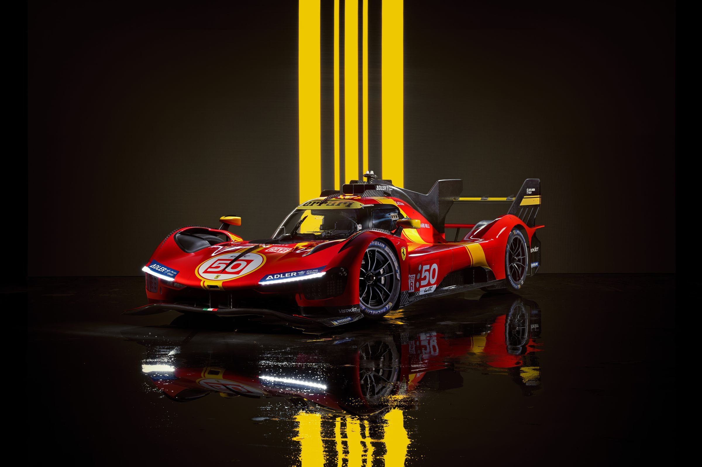
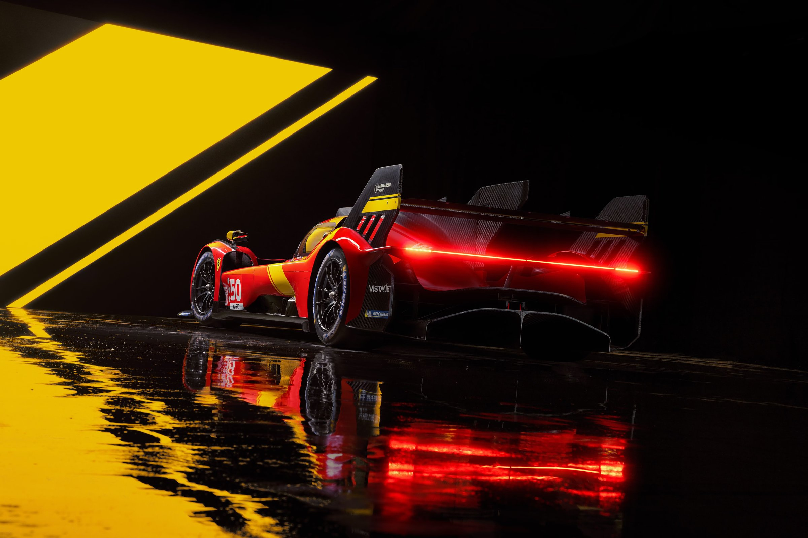
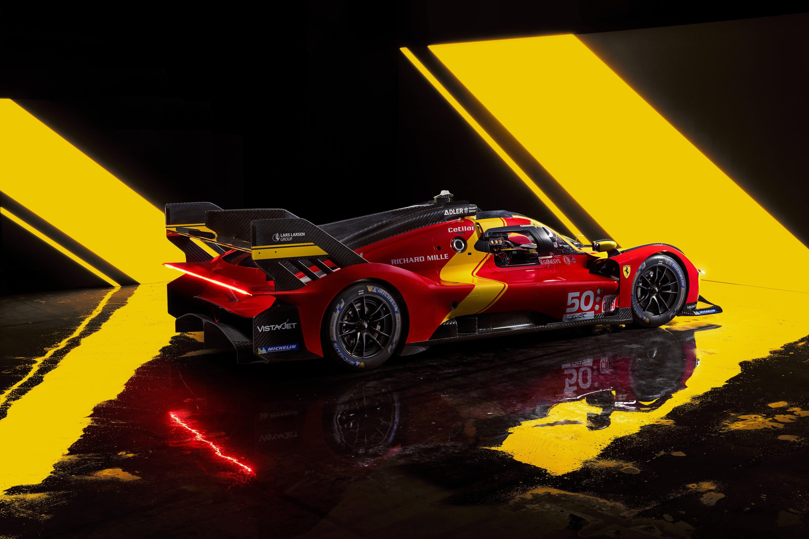
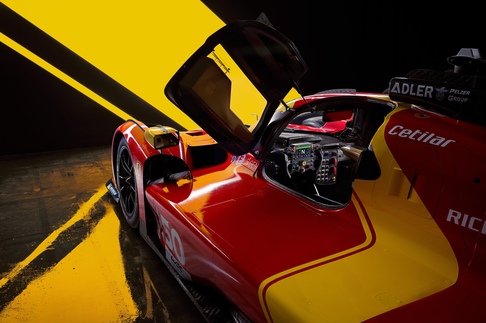
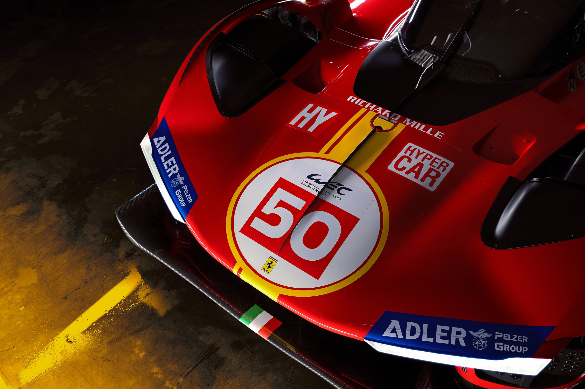
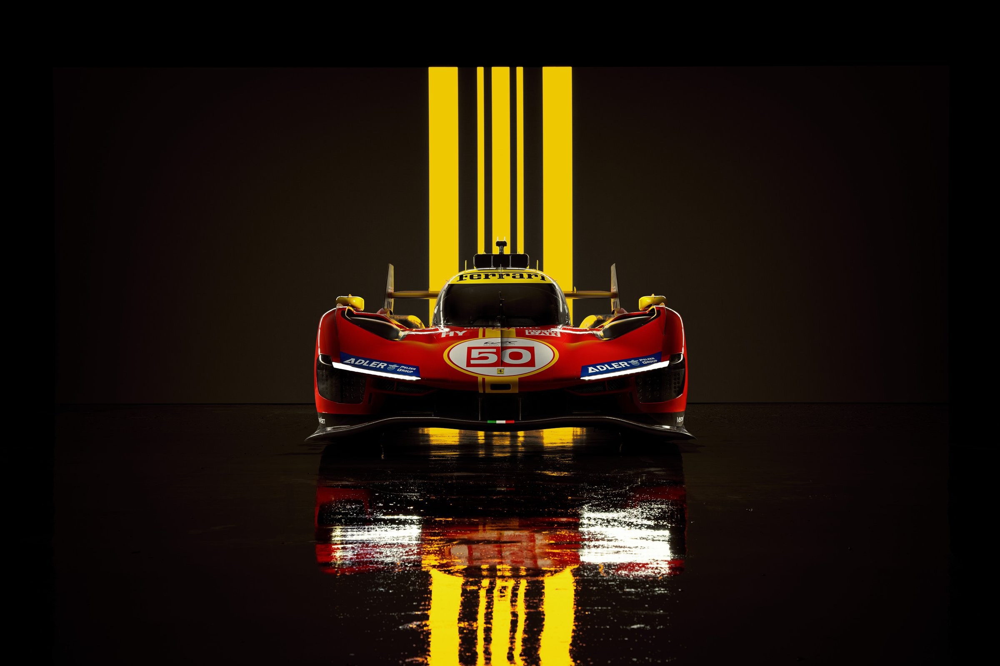
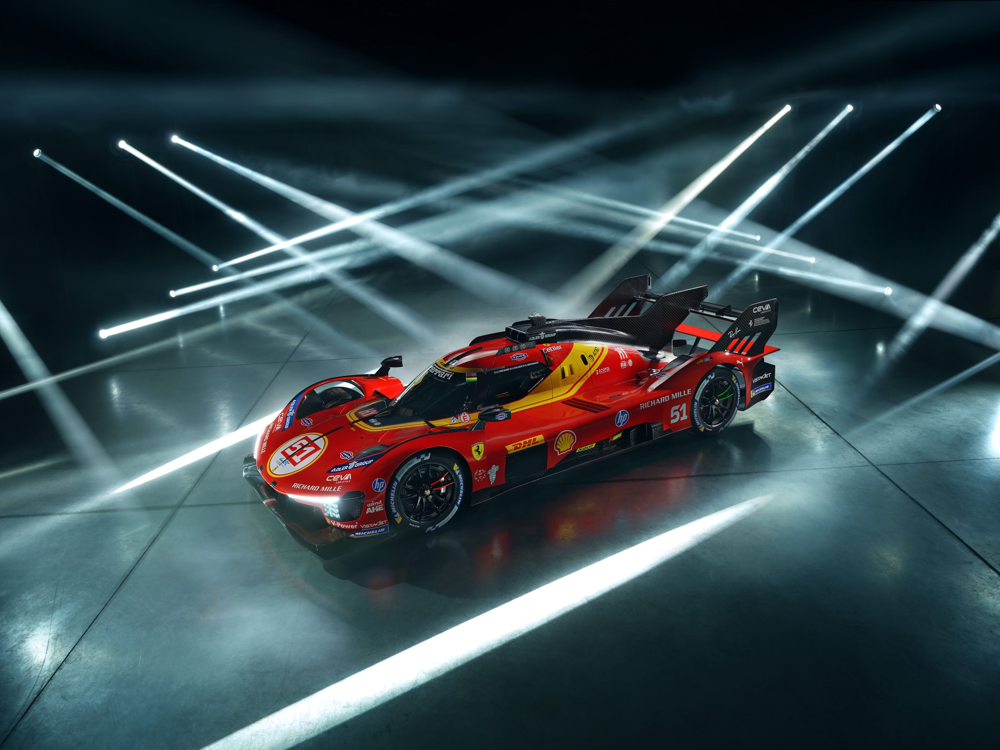
For 2026 the 499P wears gloss Rosso Scuderia — identical to the SF-26 Formula 1 car — with the yellow diagonal arrow reversed to point at the rear wing, emphasising the cockpit; laurel insignia on the front fender mark the defending champions. The livery evolves, the lineage holds: still a tribute to the 312 P of 1973 and before.
"We wanted to pay homage to our history, with many references, both large and small, to a past made up of successes and titles. We do so however, looking ahead, creating a manifesto of our commitment to the world endurance championship."
A mid-rear twin-turbo V6 and a front-axle motor — one hybrid system built for Le Mans.
F163CG · TWIN-TURBO V6
A 3.0-litre 120° V6, twin-turbocharged and mid-mounted — architecture shared with the 296 family, rebuilt for endurance.
The hybrid powertrain pairs a mid-rear internal combustion engine with an electric motor on the front axle. The V6 biturbo F163CG (2,992 cc, 120°) shares its architecture with the 296 GT3 unit, thoroughly re-engineered by Ferrari; unlike the road car, it is a fully stressed member — the engine itself is part of the chassis.
The front-axle motor produces 200 kW, rule-limited to deployment above 190 km/h; energy flows from an 800 V battery developed with Formula 1 experience, fed by the ERS. Within the rules and BoP, the system delivers up to 500 kW to the wheels — the reserve behind every pass on the straights.
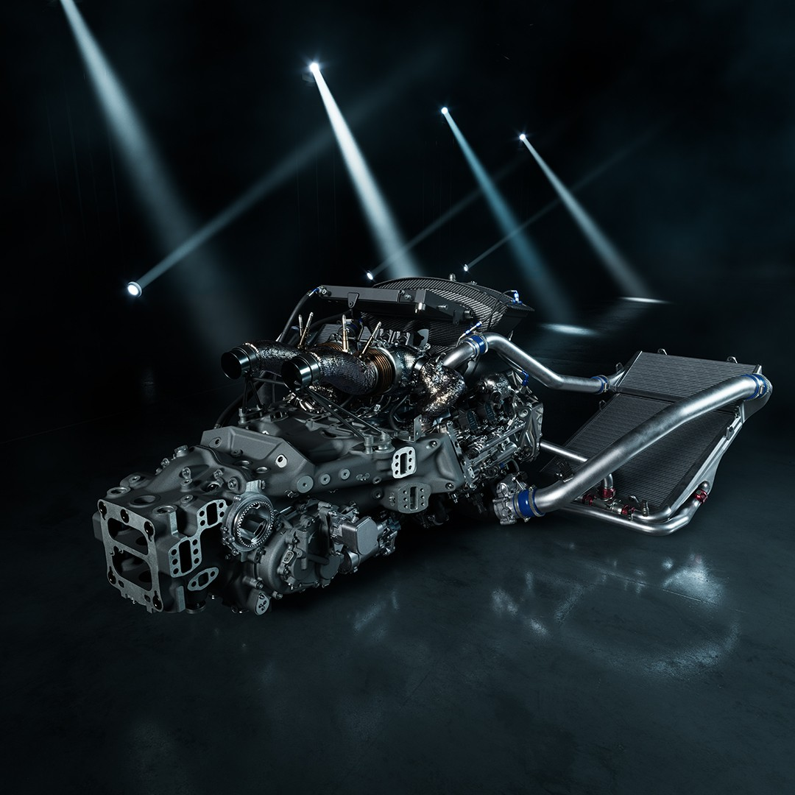
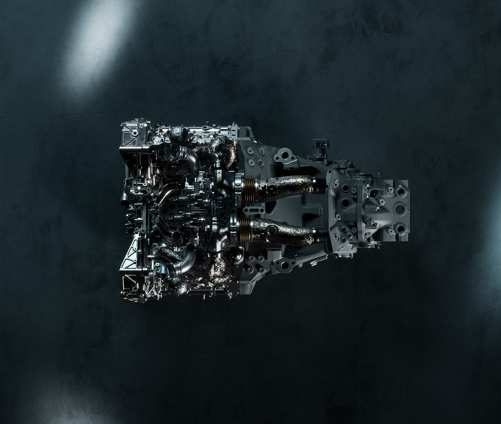
The engine shares its architecture with the 296 GT3, yet was re-engineered for endurance: as a fully stressed member it carries chassis loads directly, doing away with a sub-frame. The Xtrac seven-speed sequential gearbox in its magnesium casing, together with the F1-derived 800 V battery and ERS, completes a transmission and energy package built around 24 hours.
The 120° vee lowers the centre of gravity and frees the exhaust; a dry sump copes with sustained lateral g — a V6 built to run for 24 hours.
Under braking the front motor charges the 800 V pack; on the straights the energy returns to the wheels — every lap at Le Mans is a complete energy cycle.
* Under Le Mans Hypercar rules, Balance of Performance adjusts each car's power ceiling dynamically; 500 kW is the regulatory system maximum, with per-round values set by the BoP. The 499P's theoretical combined output (500 kW ICE + 200 kW motor) exceeds the cap and is limited electronically on track.
Drag the bodywork through six official angles — each surface the result of a negotiation with the air.
Within the LMH rules Ferrari chose no LMDh-style standard parts — the aerodynamics were designed from scratch. Six official studio images cover the front, profile and tail; drag the bodywork to examine how each surface manages the airflow.
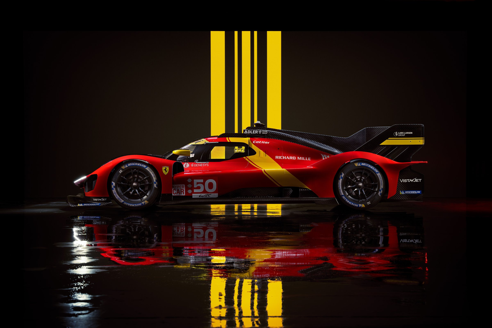
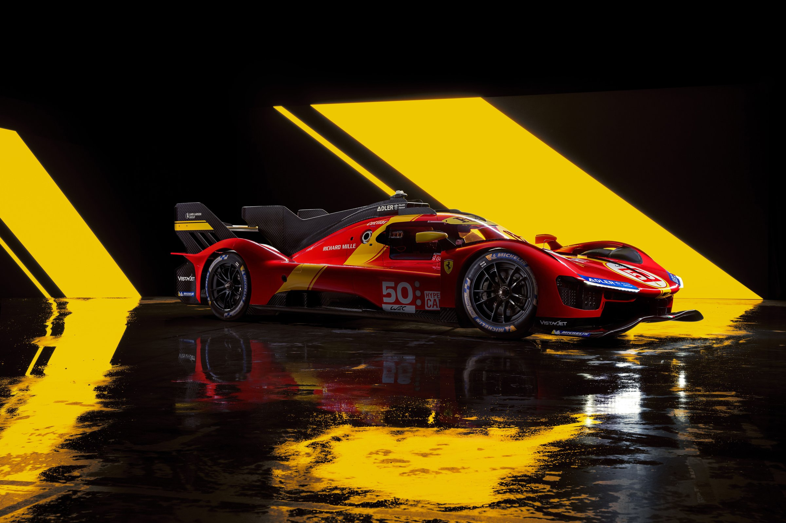
6 ANGLES · OFFICIAL STUDIO SERIES · 2022
TRIPLANO · THREE-PLANE WING
Double horizontal wing and diffuser discipline the airflow — every compromise between downforce and drag, calculated.
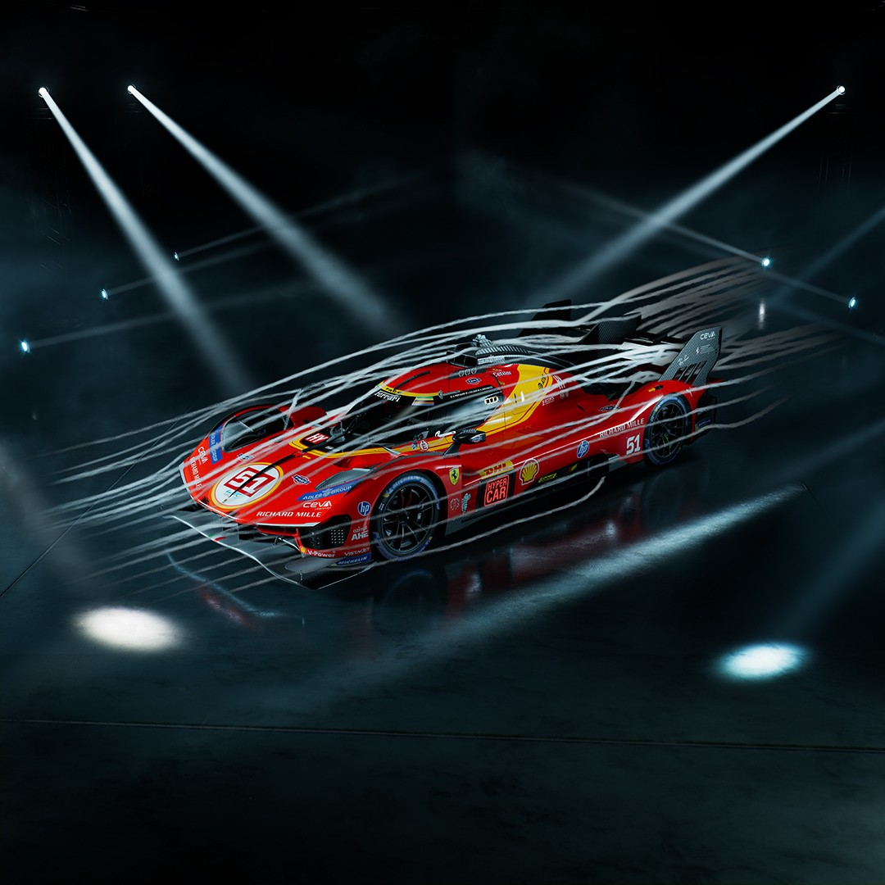
Wind tunnel and CFD shaped every surface: front flicks and floor channels guide the oncoming flow, sidepods feed cooling and the battery, the rear diffuser recovers the vortices. Le Mans demands low drag down the 6-kilometre Mulsanne straight and high downforce into the chicanes — the 499P's aero package is the official answer to that equation.
Single-seater layout, carbon fibre and switchgear — designed for three drivers sharing 24 hours.
SINGLE-SEATER LAYOUT
Near single-seater ergonomics, optimised for a three-crew endurance rotation.
The 499P's cabin follows single-seater philosophy: carbon race seat, racing wheel, functional switches lined along the central tunnel. Instrumentation centres on the driver's eye line; night lighting and button feel are designed for blind operation — at Le Mans, one second looking away is one second too long.
The same cockpit and ergonomics are handed unchanged to 499P Modificata owners (chapter 07): the client sits exactly where the race was won.
Carbon wheel with shift lights and rev LEDs; grip and switch layout standardised across all three drivers.
BRIGHT, START, 24H, RAIN in their own zone, locatable by feel through gloves; RAIN re-maps the car in one press.
PIT, ST, OK, DRI in colour-coded blocks manage pit mode, car status and differential — every pit stop begins here.
Three Le Mans wins, seven race victories, a double world title — every year since the return belongs on the honours board.
24 HOURS · 3 IN A ROW
Since its 2023 debut, the 499P has won every 24 Hours of Le Mans it has entered.
The 499P breaks cover and the fifty-year countdown begins; at Sebring the following spring, pole and a podium on debut.
Calado–Giovinazzi–Pier Guidi complete 342 laps in the number 51 — Ferrari's tenth overall win, fifty-eight years after the last. The centenary belongs to the Prancing Horse.
Fuoco–Molina–Nielsen take the number 50 across the line after 311 laps, the sister car third; 329,000 spectators watch Ferrari take Le Mans and Monaco in the same year — a first since 1934.
Three 499Ps lock out the season-opening podium (50 wins, 83 second, 51 third) — Ferrari's first top-class one-two-three in 53 years.
The number 83 of Ye–Kubica–Hanson wins — Ferrari's twelfth and a third straight, keeping the winners' trophy forever. Yifei Ye becomes China's first and Kubica Poland's first Le Mans winner.
At the season-closing 8 Hours: the Manufacturers' title (245 points) and the Drivers' title (number 51 crew) both come home — 53 years after the last world crown; AF Corse takes the Teams' World Cup.
Overall Le Mans wins
1949–2025
Years between wins
1965 → 2023
WEC overall wins
2023–2025 (through Le Mans 2025)
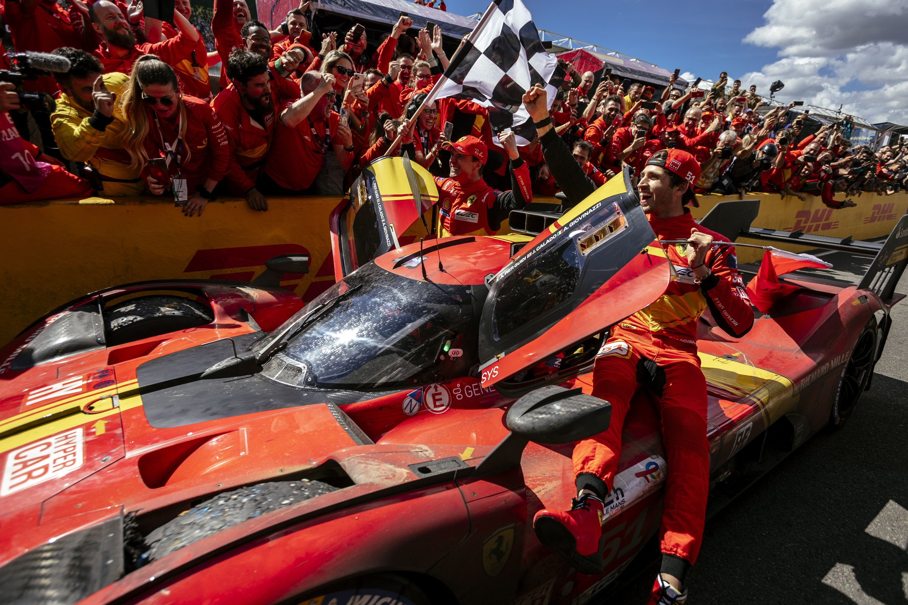
#51 2023342 laps, both 499Ps leading from the front row; after a tense final pit stop, the red 51 crosses the line — win number ten, the end of a 58-year wait.
"As an Italian, I have dreamed of driving for this brand since childhood. Now it's real. We won Le Mans with a red car." — Pier Guidi
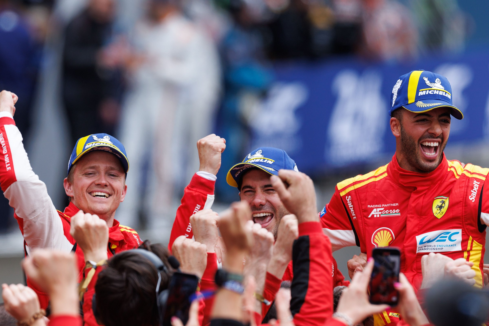
#50 2024Through nearly seven hours of safety cars and night rain, the 50 leads 72 laps and wins, the 51 third, 36 seconds behind; two Prancing Horses on the podium, win number eleven.
"Fantastic! It really is a dream come true... The last lap was very long. I just had to manage the lead." — Nielsen
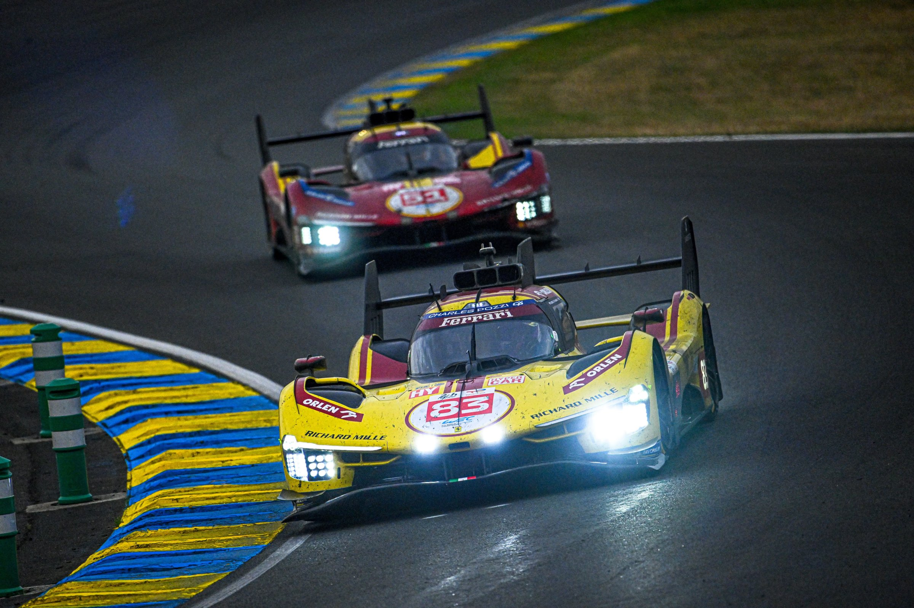
#83 2025The Giallo Modena number 83 takes the flag: Ferrari's twelfth win and third in a row, the trophy kept for good; Yifei Ye and Robert Kubica become their nations' first Le Mans winners.
"The Ferrari 499P has now won every 24 Hours of Le Mans it has contested — a car already etched in motorsport legend." — Official press release
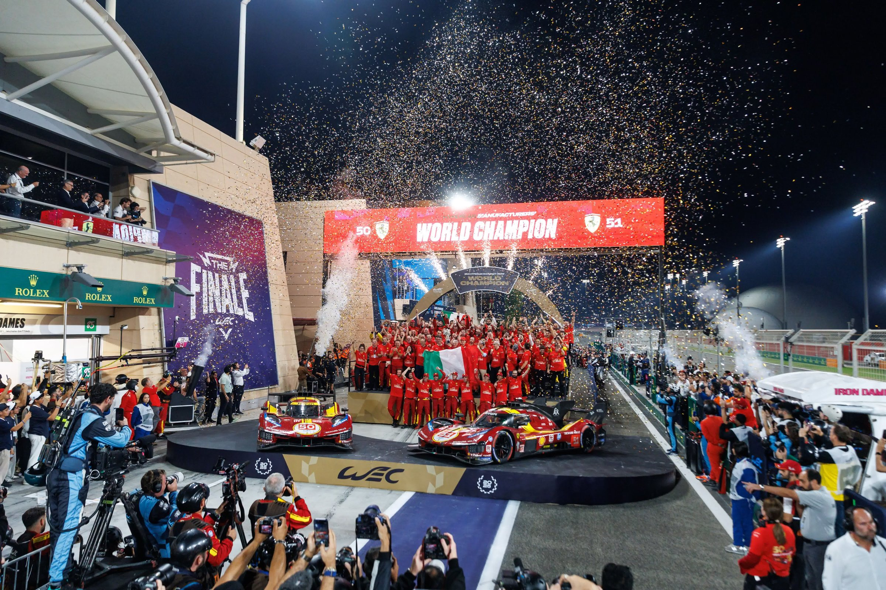
At the closing 8 Hours of Bahrain the three 499Ps held station to the flag: Manufacturers' and Drivers' world titles decided in a single night for Maranello — its first overall endurance crown since the 312 P of 1972, and the first Drivers' title ever awarded to a Ferrari crew in the top class.
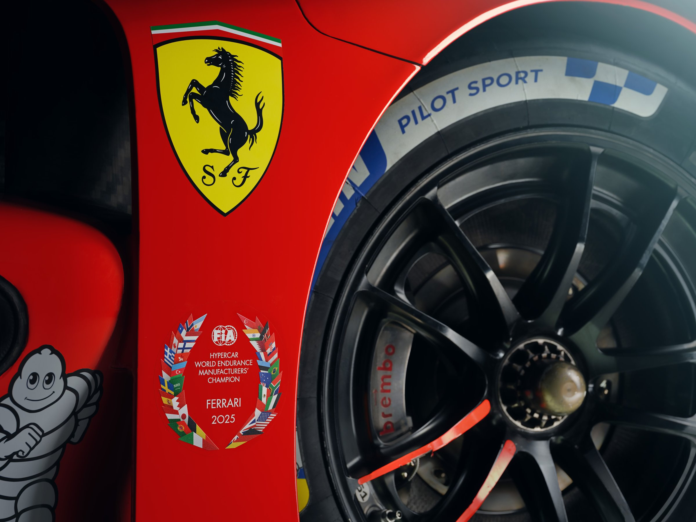
The world-champion laurel sits beside the shield and the Michelin man on the sidepod — the mark 499P now shares with the 312 P. On 18 December 2025, the crews drove both cars through the streets of Maranello to share the 53-year-overdue title with employees and fans.
"2025 was a fantastic year – it fulfilled a dream I've had since childhood: becoming World Champion with Ferrari."
The 499P freed from the rulebook — a client prototype built for track driving pleasure.
PROJECT 255 · TRACK ONLY
The client track car, unconstrained by FIA rules or BoP — unveiled at the 2023 Finali Mondiali to celebrate the Le Mans win.
The 499P Modificata was a first for Ferrari: a track-only car derived directly from a racer, yet free of any racing technical regulations. No BoP, no power cap, no 190 km/h threshold — the engineers returned everything the rulebook had constrained.
Cockpit and ergonomics are identical to the race winner: the owner sits exactly where Calado, Giovinazzi and Pier Guidi won Le Mans. From 2024, Modificata owners join the Sport Prototipi Clienti programme — Ferrari-run technical and logistical support, sharing the calendar with F1 Clienti and the XX Programme.
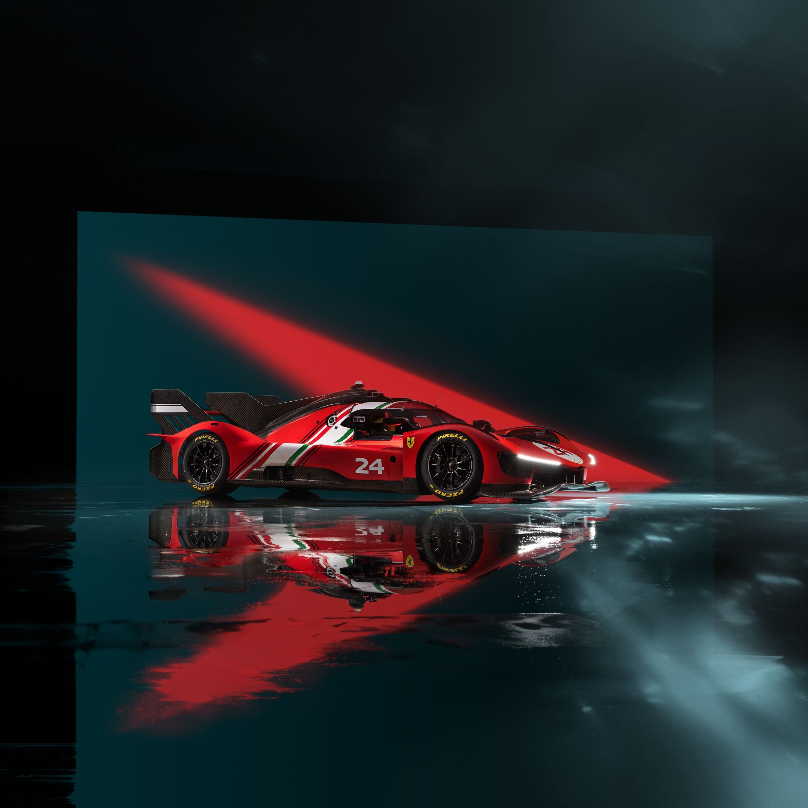
It shares the 499P's carbon monocoque, push-rod suspension and braking system; the V6 biturbo remains a fully stressed member. The bespoke work is about letting go: electronics, suspension and engine maps recalibrated for non-competitive driving, with start-assist and traction logic that let non-professional drivers approach the limit with confidence.
A button on the back of the wheel releases an extra 120 kW (163 cv): available at full throttle, for no more than seven seconds per activation, with laps' worth of uses governed by battery balance and track layout — logic conceptually akin to F1's KERS. Nominal output is 520 kW (707 cv); activated, the total is 640 kW (870 cv).
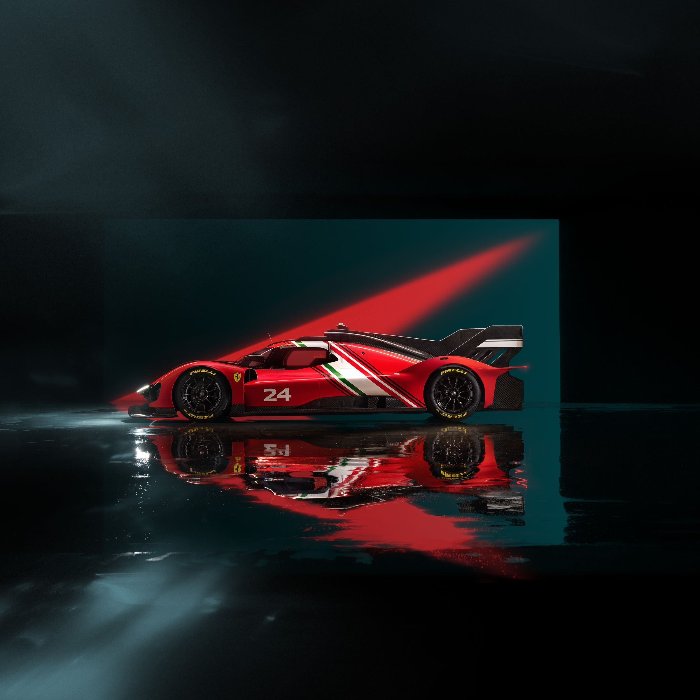
One built as the professional driver's instrument of ultimate performance; the other for the owner's pure driving pleasure: no stopwatch pressure, just fast-warming, consistent grip and limits that can be approached lap after lap. The official word for them: "two different worlds, conceived for completely different applications."
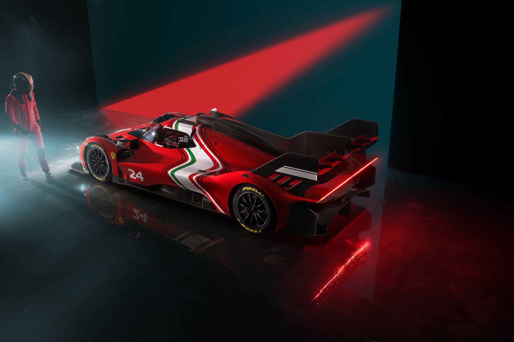
After the March 2024 debut at Mugello, the season spans Sonoma, Laguna Seca, Balaton, Suzuka, Paul Ricard, the Nürburgring and the Finali Mondiali — Ferrari handles maintenance and logistics throughout.
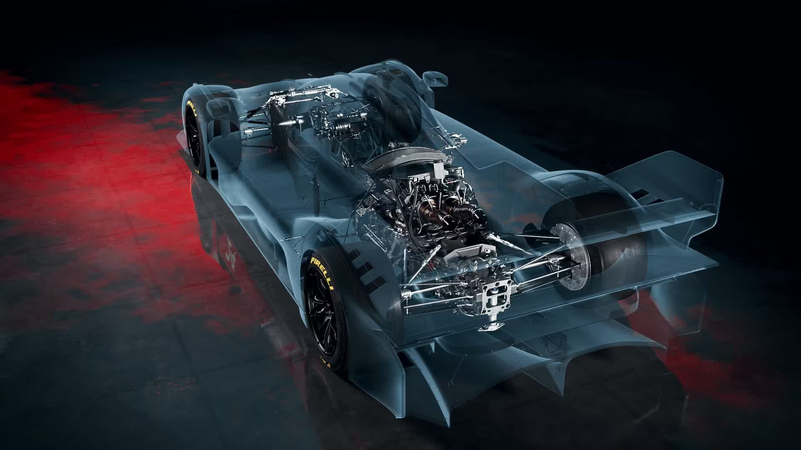
Carbon monocoque, mid-mounted V6 and front-axle motor in one view — the racing 499P's skeleton, with a different brief.
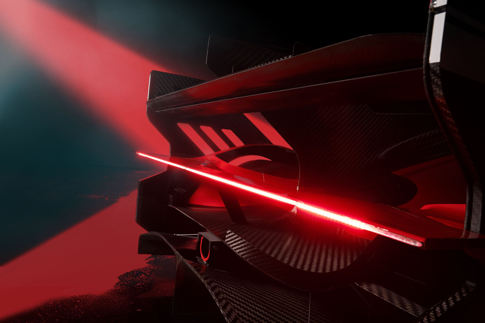
The full-width light bar, shared with the racing 499P — on a track night, the client car is just as unmistakable.
TECHNICAL SPECIFICATIONS
* BoP values are adjusted per round — the official FIA WEC bulletin of each event prevails.
"Starting from a blank sheet of paper was a source of unique and continuous motivation in order to find effective solutions to guarantee the 499P's performance and reliability."
MARANELLO · DEFENDING TITLES
For 2026 the 499P wears gloss Rosso Scuderia and a reversed yellow arrow, carrying the champions' laurels on its bodywork into title defence. No radically new car — just a sharper execution: "Our philosophy is always to look ahead, without dwelling on past achievements, even after an unforgettable season like 2025." From the 250 LM of 1965 to the 499P of today, there has always been a Prancing Horse in the Le Mans night. This time, nobody had to wait.